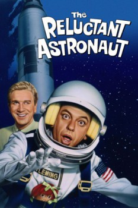

Country:United States, 101 minutes
Spoken languages:English
Genres:Comedy, Family, Sci-Fi
Director(s):Edward Montagne
Writer(s):James Fritzell, Everett Greenbaum
Video Codec:Unknown
Number: 1602

Certification:NR
Storyline:
Roy Fleming is a small-town kiddie-ride operator who is deathly afraid of heights. After learning that his father has signed him up for the space program, Roy reluctantly heads for Houston, only to find out upon arriving that his job is as a janitor, not an astronaut. Anxious to live up to the expectations of his domineering father, Roy manages to keep up a facade of being an astronaut to his family and friends. When NASA decides to launch a layperson into space to prove the worthiness of a new automated spacecraft, Roy gets the chance to confront his fears.
Cast:
Don Knotts (as Roy Fleming), Leslie Nielsen (as Major Fred Gifford), Joan Freeman (as Ellie Jackson), Jesse White (as Donelli), Jeanette Nolan (as Mrs. Fleming)
Medium: Media file,
Location: D:\Disney\Don Knotts\The Reluctant Astronaut (1967).mp4
Loaned: No
Aspect ratio: Unknown